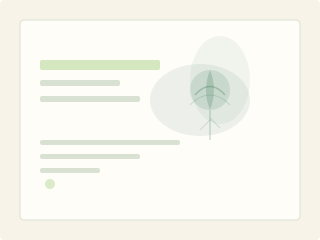

Plant a Forest of Ideas
Grow ideas into living systems of action.
A concise description of what this organisation does, who it serves, and why it matters.
Explore the idea seeds
A place for ideas to take root.
This organisation works at the intersection of practice, community and long-term thinking. It brings together people, tools and processes to make complex work simpler over time.
What we grow together.
Let's Placemake
Let's Placemake is PAFOI's outreach programme for bringing ideas into shared spaces, conversations and practical local action.
See the programmeFeatured idea seeds
Join, collaborate or host.
A short invitation to learn more, collaborate, or start a conversation.
Start a conversation